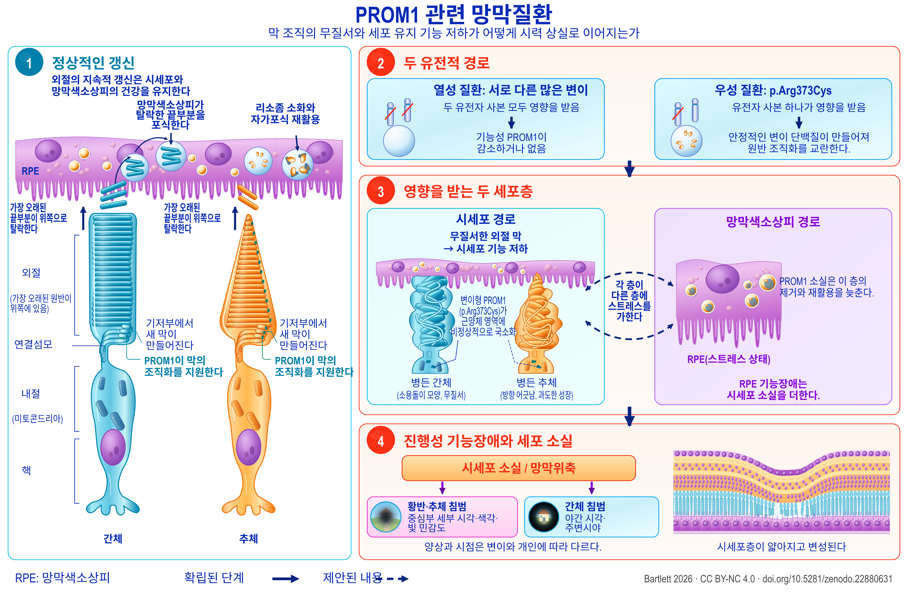

Review
PROM1 관련 망막변성
대립유전자별 특성을 고려한 기전, 중재 및 연구 우선순위의 근거 지도
English title: PROM1-associated retinal degeneration
Working paper, version 1.90, 21 September 2026.
The Zenodo record also holds an accessible HTML edition, a spoken-text version, a description of the figure and an audiobook.
Abstract
PROM1 관련 망막변성은 우성 황반질환과 열성 시세포 변성을 포함하며, 후자는 흔히 더 광범위하게 나타난다. 이들의 서로 다른 유전양식과 임상상은 기전과 치료에 관해 서로 다른 질문을 제기한다. 이 문헌고찰과 근거 지도는 임상유전학, 자연경과, 막 생물학, 시세포와 망막색소상피(retinal pigment epithelium, RPE) 모델, 전임상 중재 및 기준일이 명시된 인간 대상 연구 기록을 통합한다. 임상 중개 측면에서 가장 중요한 진전은 PROM1 결핍 실험계에서의 구제(rescue) 효과로, 환자 유래 오가노이드와 녹아웃 마우스에서 입증되었다. 발병 후에도 얻을 수 있는 이득은 전문을 검토한 마우스 연구 한 편과 별도의 학회 초록에서 보고되었다. 아직 해결되지 않은 핵심 적용 문제는 우성 변이 질환으로의 확장이며, 이를 위해서는 유전자 보충, 변이형 억제 및 병합치료를 직접 비교해야 한다. 기전 문헌은 외절의 형태형성을 넘어선다. RPE를 직접 다룬 실험은 자가포식 플럭스(autophagic flux)와 외절 제거 과정의 관여를 시사하며, 빛에 민감한 녹아웃 모델은 엔도텔린, 인슐린유사성장인자 1(IGF1) 및 대사 스트레스의 관여를 시사한다. 이러한 경로는 세포 구획별로 해석해야 한다. 인간의 정량 자가형광 소견은 비스레티노이드 과잉을 보편적 원인으로 보는 설명에 제약을 가하며, 다른 망막질환 유전자형에서 나타난 국소 엔도텔린의 보호 효과는 이 경로를 일률적으로 유해하다고 보는 견해에 반하는 근거가 된다. 이에 따라 임상 평가변수도 구분된다. 우성 질환의 위축 확대, 열성 질환의 타원체대 축소, 빛간섭단층촬영(optical coherence tomography, OCT)에서의 층별 두께 감소는 서로 다른 과정을 측정하며 바닥효과도 다르다. 명시적 또는 더 폭넓은 유전적 선정기준을 둔 인간 대상 연구에 PROM1 질환이 포함될 수는 있지만, 대부분의 기록은 실제로 누가 참여했고 어떤 결과를 얻었는지보다 누가 참여할 수 있는지를 보여 준다. 일곱 가지 실험 연구계획은 이러한 구분을 검증 가능한 비교로 연결하며, 각각 결정적인 대조, 해석의 타당성을 지키기 위한 조건, 그리고 그 결과로 내릴 수 있는 결정을 제시한다. 이 틀은 후보 치료법을 대립유전자, 세포 구획 및 질병 단계에 따라 구별한다.


Description of the figure
PROM1 관련 망막질환. 현재의 이해를 바탕으로 한 잠정적 질환 모델: 외절의 갱신과 이를 교란하는 요인(1, 2), 영향을 받는 두 세포 구획(3), 그에 따른 시각 상실(4)을 보여 준다. 파선은 확립된 사실이 아니라 제안된 관계를 나타낸다. 각 요소의 근거는 3–10절에 제시되어 있다.
패널 1. 정상적인 갱신. 간체 시세포와 추체 시세포가 망막색소상피 아래에 나란히 서 있다. 각 세포에는 위에서 아래로 다음 표지가 붙어 있다. 가장 오래된 원반이 위쪽에 있는 외절, 연결섬모, 미토콘드리아를 포함하는 내절, 그리고 핵이다. 각 외절의 기저부에서 새 막이 만들어지고 PROM1이 그 조직화를 지원하는 한편, 가장 오래된 끝부분은 위쪽으로 탈락한다. 망막색소상피는 탈락한 끝부분을 포식하여 리소좀 소화와 자가포식 재활용으로 분해한다.
패널 2. 두 유전적 경로. 왼쪽은 열성 질환이다. 서로 다른 많은 변이가 있으며 두 유전자 사본 모두 영향을 받아 기능성 PROM1이 감소하거나 없어진다. 오른쪽은 우성 질환 p.Arg373Cys이다. 유전자 사본 하나가 영향을 받으며, 그로부터 안정적인 변이 단백질이 만들어져 원반 조직화를 교란한다.
패널 3. 영향을 받는 두 세포층. 왼쪽은 시세포 경로이다. 무질서한 외절 막이 시세포 기능 저하로 이어진다. 병든 간체는 소용돌이 모양의 무질서한 모습으로, 병든 추체는 방향이 어긋나고 과도하게 자란 모습으로 그려져 있으며, 변이형 PROM1 p.Arg373Cys가 근양체(myoid) 영역에 비정상적으로 국소화되어 있다. 오른쪽은 망막색소상피 경로이다. PROM1 소실은 이 층의 제거와 재활용을 늦추며, 이 층은 스트레스를 받는 모습으로 표시된다. 그 기능장애는 시세포 소실을 더한다. 두 상자 사이에는 “각 층이 다른 층에 스트레스를 가한다”는 표시와 함께 굽은 파선 화살표가 있다. 파선은 확립된 관계가 아니라 제안된 관계를 뜻한다.
패널 4. 진행성 기능장애와 세포 소실. 시세포 소실과 망막위축이 뒤따르며 두 갈래로 나뉜다. 황반·추체 침범은 중심부의 세부 시각, 색각 및 빛 민감도에 영향을 미치고, 간체 침범은 야간 시각과 주변시야에 영향을 미친다. 양상과 시점은 변이와 개인에 따라 다르다. 옆의 단면도는 시세포층이 얇아지고 변성되는 모습을 보여 준다.
범례. 실선 화살표는 확립된 단계를 나타낸다. 파선과 파선 화살표는 제안된 내용을 나타낸다.
Download the figure (PNG, 5400 × 3600 pixels, CC BY-NC 4.0)
How to cite
Bartlett C. PROM1 관련 망막변성: 대립유전자별 특성을 고려한 기전, 중재 및 연구 우선순위의 근거 지도. Version 1.90. Zenodo, 21 September 2026. https://doi.org/10.5281/zenodo.22880631